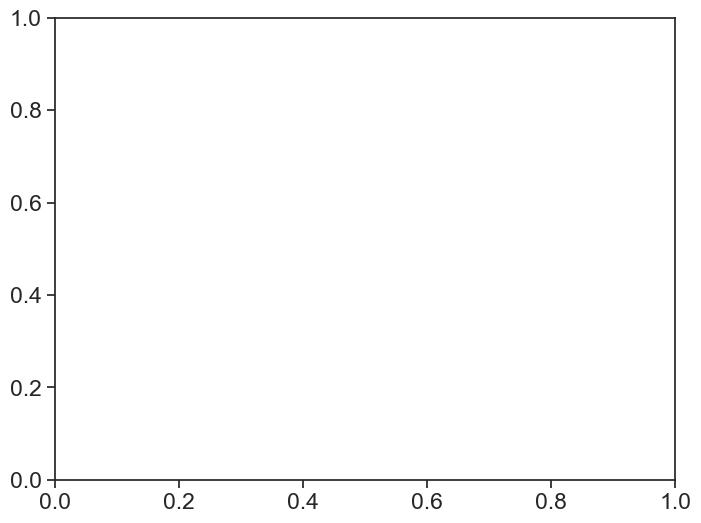
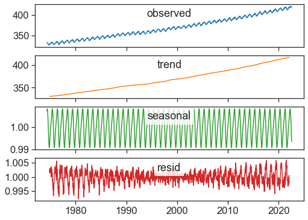
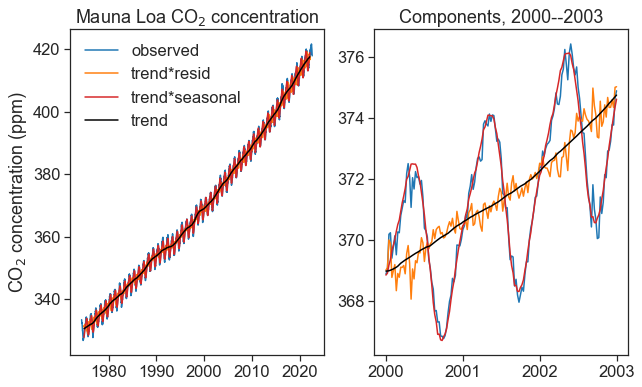

import numpy as np
import matplotlib.pyplot as plt
import pandas as pd
from pandas.plotting import register_matplotlib_converters
register_matplotlib_converters() # datetime converter for a matplotlib
import seaborn as sns
sns.set(style="ticks", font_scale=1.5)
from statsmodels.tsa.seasonal import seasonal_decompose
import matplotlib.dates as mdates
from matplotlib.dates import DateFormatter35 seasonal decomposition
35.1 trends in atmospheric carbon dioxide
Mauna Loa CO2 concentration.
data from NOAA
url = "https://gml.noaa.gov/webdata/ccgg/trends/co2/co2_weekly_mlo.csv"
# df = pd.read_csv(url, header=47, na_values=[-999.99])
# you can first download, and then read the csv
filename = "co2_weekly_mlo.csv"
df = pd.read_csv(filename, header=35, na_values=[-999.99])
df| 1974 | 5 | 19 | 1974.3795 | 333.37 | 5.1 | -999.99 | -999.99.1 | 50.39 | |
|---|---|---|---|---|---|---|---|---|---|
| 0 | 1974 | 5 | 26 | 1974.3986 | 332.95 | 6 | NaN | NaN | 50.05 |
| 1 | 1974 | 6 | 2 | 1974.4178 | 332.35 | 5 | NaN | NaN | 49.59 |
| 2 | 1974 | 6 | 9 | 1974.4370 | 332.20 | 7 | NaN | NaN | 49.64 |
| 3 | 1974 | 6 | 16 | 1974.4562 | 332.37 | 7 | NaN | NaN | 50.06 |
| 4 | 1974 | 6 | 23 | 1974.4753 | 331.73 | 5 | NaN | NaN | 49.72 |
| ... | ... | ... | ... | ... | ... | ... | ... | ... | ... |
| 2565 | 2023 | 7 | 23 | 2023.5575 | 421.28 | 4 | 418.03 | 397.30 | 141.60 |
| 2566 | 2023 | 7 | 30 | 2023.5767 | 420.83 | 6 | 418.10 | 396.80 | 141.69 |
| 2567 | 2023 | 8 | 6 | 2023.5959 | 420.02 | 6 | 417.36 | 395.65 | 141.41 |
| 2568 | 2023 | 8 | 13 | 2023.6151 | 418.98 | 4 | 417.25 | 395.24 | 140.89 |
| 2569 | 2023 | 8 | 20 | 2023.6342 | 419.31 | 2 | 416.64 | 395.22 | 141.71 |
2570 rows × 9 columns
| year | month | day | decimal | average | ndays | 1 year ago | 10 years ago | increase since 1800 | |
|---|---|---|---|---|---|---|---|---|---|
| date | |||||||||
| 1974-05-19 | 1974 | 5 | 19 | 1974.3795 | 333.37 | 5 | NaN | NaN | 50.40 |
| 1974-05-26 | 1974 | 5 | 26 | 1974.3986 | 332.95 | 6 | NaN | NaN | 50.06 |
| 1974-06-02 | 1974 | 6 | 2 | 1974.4178 | 332.35 | 5 | NaN | NaN | 49.60 |
| 1974-06-09 | 1974 | 6 | 9 | 1974.4370 | 332.20 | 7 | NaN | NaN | 49.65 |
| 1974-06-16 | 1974 | 6 | 16 | 1974.4562 | 332.37 | 7 | NaN | NaN | 50.06 |
| ... | ... | ... | ... | ... | ... | ... | ... | ... | ... |
| 2022-06-26 | 2022 | 6 | 26 | 2022.4836 | 420.31 | 7 | 418.14 | 395.36 | 138.71 |
| 2022-07-03 | 2022 | 7 | 3 | 2022.5027 | 419.73 | 6 | 417.49 | 395.15 | 138.64 |
| 2022-07-10 | 2022 | 7 | 10 | 2022.5219 | 419.08 | 6 | 417.25 | 394.59 | 138.52 |
| 2022-07-17 | 2022 | 7 | 17 | 2022.5411 | 418.43 | 6 | 417.14 | 394.64 | 138.41 |
| 2022-07-24 | 2022 | 7 | 24 | 2022.5603 | 417.84 | 6 | 415.68 | 394.11 | 138.36 |
2515 rows × 9 columns
# %matplotlib widget
fig, ax = plt.subplots(1, figsize=(8,6))
ax.plot(df['average'])
ax.set(xlabel="date",
ylabel="CO2 concentration (ppm)",
# ylim=[0, 430],
title="Mauna Loa CO2 concentration");KeyError: 'average'
fill missing data. interpolate method: ‘time’
interpolation methods visualized
df['co2'] = (df['average'].resample("D") #resample daily
.interpolate(method='time') #interpolate by time
)
df| year | month | day | decimal | average | ndays | 1 year ago | 10 years ago | increase since 1800 | co2 | |
|---|---|---|---|---|---|---|---|---|---|---|
| date | ||||||||||
| 1974-05-19 | 1974 | 5 | 19 | 1974.3795 | 333.37 | 5 | NaN | NaN | 50.40 | 333.37 |
| 1974-05-26 | 1974 | 5 | 26 | 1974.3986 | 332.95 | 6 | NaN | NaN | 50.06 | 332.95 |
| 1974-06-02 | 1974 | 6 | 2 | 1974.4178 | 332.35 | 5 | NaN | NaN | 49.60 | 332.35 |
| 1974-06-09 | 1974 | 6 | 9 | 1974.4370 | 332.20 | 7 | NaN | NaN | 49.65 | 332.20 |
| 1974-06-16 | 1974 | 6 | 16 | 1974.4562 | 332.37 | 7 | NaN | NaN | 50.06 | 332.37 |
| ... | ... | ... | ... | ... | ... | ... | ... | ... | ... | ... |
| 2022-06-26 | 2022 | 6 | 26 | 2022.4836 | 420.31 | 7 | 418.14 | 395.36 | 138.71 | 420.31 |
| 2022-07-03 | 2022 | 7 | 3 | 2022.5027 | 419.73 | 6 | 417.49 | 395.15 | 138.64 | 419.73 |
| 2022-07-10 | 2022 | 7 | 10 | 2022.5219 | 419.08 | 6 | 417.25 | 394.59 | 138.52 | 419.08 |
| 2022-07-17 | 2022 | 7 | 17 | 2022.5411 | 418.43 | 6 | 417.14 | 394.64 | 138.41 | 418.43 |
| 2022-07-24 | 2022 | 7 | 24 | 2022.5603 | 417.84 | 6 | 415.68 | 394.11 | 138.36 | 417.84 |
2515 rows × 10 columns
35.2 decompose data
seasonal_decompose returns an object with four components:
- observed: Y(t)
- trend: T(t)
- seasonal: S(t)
- resid: e(t)
Additive model: Y(t) = T(t) + S(t) + e(t)
Multiplicative model: Y(t) = T(t) \times S(t) \times e(t)
35.2.0.1 Interlude
learn how to use zip in a loop
letters = ['a', 'b', 'c', 'd', 'e']
numbers = [1, 2, 3, 4, 5]
# zip let's us iterate over to lists at the same time
for l, n in zip(letters, numbers):
print(f"{l} = {n}")a = 1
b = 2
c = 3
d = 4
e = 5Plot each component separately.
# %matplotlib widget
fig, ax = plt.subplots(4, 1, figsize=(8,6), sharex=True)
decomposed_m = seasonal_decompose(df['co2'], model='multiplicative')
decomposed_a = seasonal_decompose(df['co2'], model='additive')
decomposed = decomposed_m
pos = (0.5, 0.9)
components =["observed", "trend", "seasonal", "resid"]
colors = ["tab:blue", "tab:orange", "tab:green", "tab:red"]
for axx, component, color in zip(ax, components, colors):
data = getattr(decomposed, component)
axx.plot(data, color=color)
axx.text(*pos, component, bbox=dict(facecolor='white', alpha=0.8),
transform=axx.transAxes, ha='center', va='top')
# %matplotlib widget
decomposed = decomposed_m
fig, ax = plt.subplots(1, 2, figsize=(10,6))
ax[0].plot(df['co2'], color="tab:blue", label="observed")
ax[0].plot(decomposed.trend * decomposed.resid, color="tab:orange", label="trend*resid")
ax[0].plot(decomposed.trend * decomposed.seasonal, color="tab:red", label="trend*seasonal")
ax[0].plot(decomposed.trend, color="black", label="trend")
ax[0].set(ylabel="CO$_2$ concentration (ppm)",
title="Mauna Loa CO$_2$ concentration")
ax[0].legend(frameon=False)
start = "2000-01-01"
end = "2003-01-01"
zoom = slice(start, end)
ax[1].plot(df.loc[zoom, 'co2'], color="tab:blue", label="observed")
ax[1].plot((decomposed.trend * decomposed.resid)[zoom], color="tab:orange", label="trend*resid")
ax[1].plot((decomposed.trend * decomposed.seasonal)[zoom], color="tab:red", label="trend*seasonal")
ax[1].plot(decomposed.trend[zoom], color="black", label="trend")
date_form = DateFormatter("%Y")
ax[1].xaxis.set_major_formatter(date_form)
ax[1].xaxis.set_major_locator(mdates.YearLocator(1))
ax[1].set_title("Components, 2000--2003");